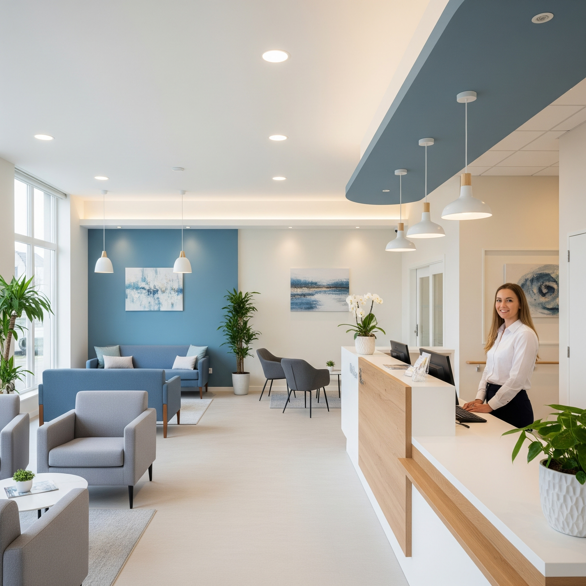
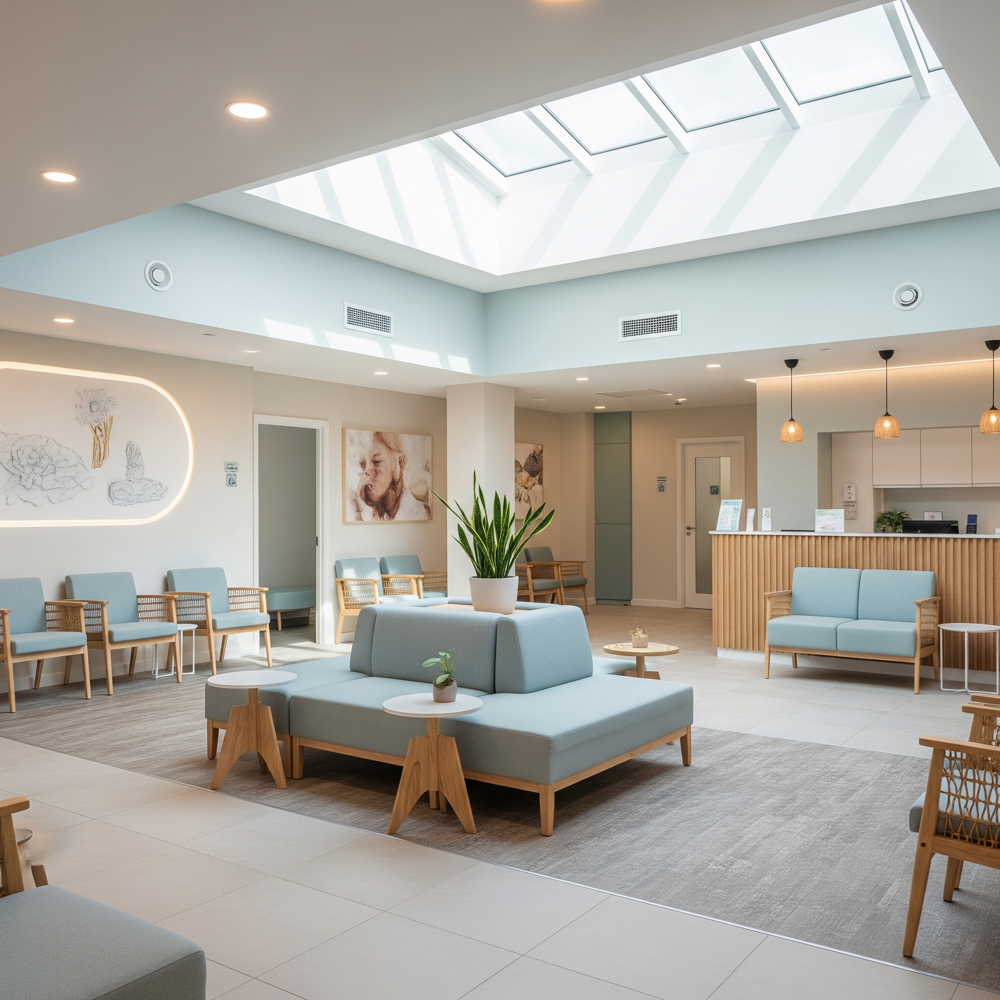
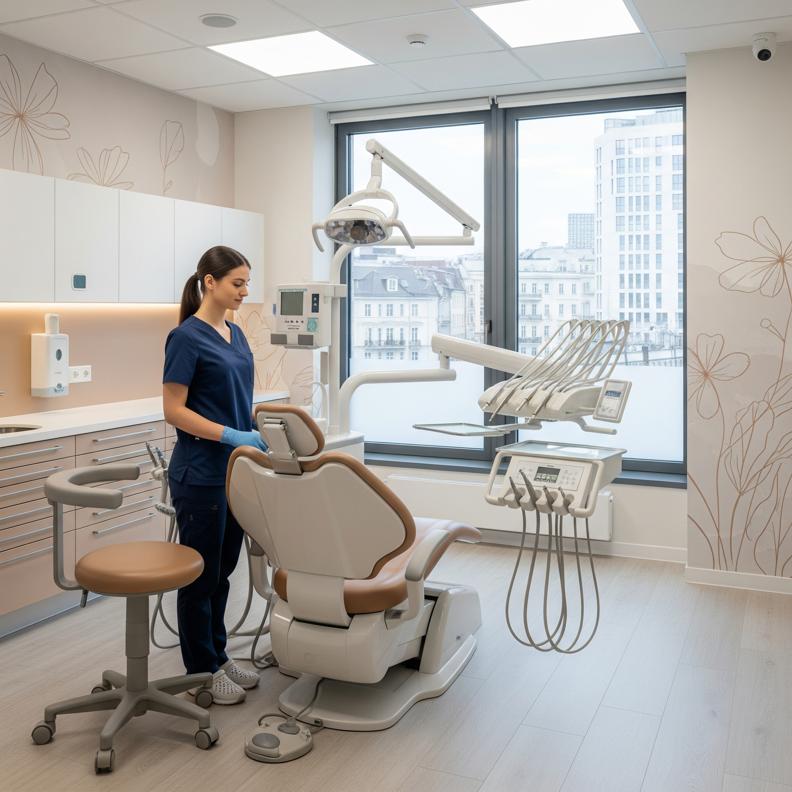
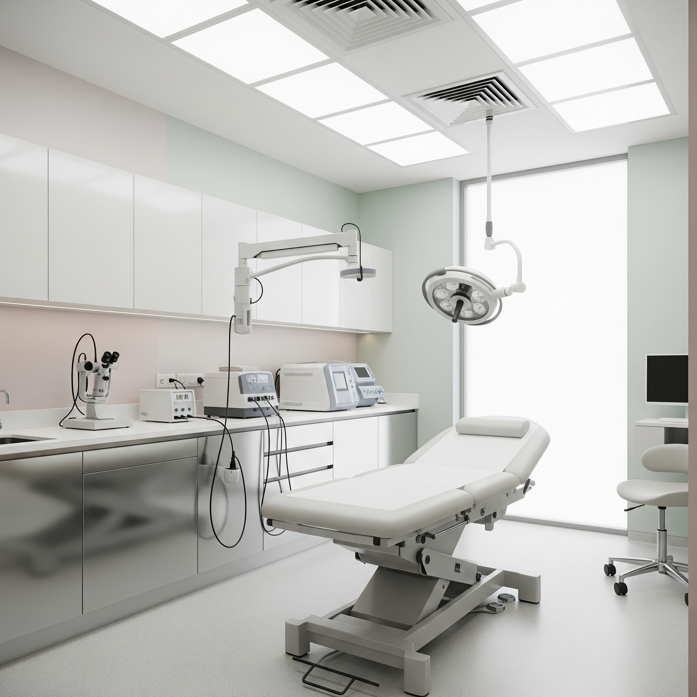

プロフィール
経験豊富な医師・スタッフが皆様の健康をサポートします
クリニックの理念
地域の皆様に信頼される医療機関を目指しています
患者様中心の医療
患者様のお気持ちに寄り添い、十分な説明とご納得をいただいた上で治療を進めます。
最新の医療技術
常に最新の医療技術と設備を導入し、より良い治療を提供いたします。
地域貢献
地域の健康づくりに貢献し、皆様の生活の質の向上をサポートします。
医師紹介
専門性の高い医師が、それぞれの分野で最適な治療をご提供します
院長 田中太郎
歯科医師・歯学博士
経歴
資格・所属学会
副院長 佐藤花子
皮膚科医師・医学博士
経歴
資格・所属学会
クリニック施設
清潔で快適な環境で、安心して治療をお受けいただけます
クリニック外観
さくらビル2階に位置し、駅から徒歩5分の好立地。駐車場も完備しております。
エントランス
明るく開放的なエントランスで、患者様をお迎えいたします。

受付
笑顔のスタッフがお迎えし、丁寧な対応でサポートいたします。

待合室
ゆったりとした空間でリラックスしてお待ちいただけます。

歯科診察室
最新の歯科機器を完備し、精密で安全な治療を提供いたします。

皮膚科診察室
プライバシーに配慮した個室で、安心して診察をお受けいただけます。
スタッフ紹介
チーム一丸となって、患者様をサポートいたします
山田 美穂
歯科衛生士（主任）
15年の経験を持つベテラン歯科衛生士です。予防歯科と患者様のケアを担当しています。
鈴木 良子
看護師
皮膚科診療のサポートを行っています。患者様に安心していただけるよう心がけています。
高橋 さくら
受付・事務
患者様との最初の接点として、笑顔でお迎えし、丁寧な対応を心がけています。
中村 花音
歯科助手
治療のアシスタントと院内の清掃・消毒を担当し、安全で清潔な環境作りに努めています。
クリニックの歩み
2005年の開院から現在まで、地域医療に貢献し続けています
さくらクリニック開院
歯科診療から始まり、地域医療の第一歩を踏み出しました
院内リニューアル
最新医療機器を導入し、より質の高い診療環境を整備
皮膚科診療開始
副院長就任により、皮膚科診療を開始し診療科目を拡大
Web予約システム導入
患者様の利便性向上のため、24時間予約システムを導入
感染症対策設備強化
安心・安全な診療環境のため、感染症対策を徹底強化
開院19周年
地域の皆様に支えられ、19周年を迎えました